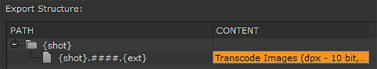

| 1. | Select the required sequence in the bin view and navigate to File > Export... |
The Export dialog displays.
| 2. | Select Process as Shots and use the default, Transcode Shots DPX, or build a shot template using the Path and Contents fields and the folder and +/- buttons. |
The default:

Creates a folder for each clip instance or {shot}, containing a clip with the {shot} name and the required file padding (####) and extension {ext}.
| 3. | Enter the Export To directory or click Choose... and browse to the location. |
The Export To directory is the starting point from which the shot template builds your shot hierarchy.
| 4. | In the Content tab, complete the File Type specific and general controls common to all file types as described in Transcoding a Sequence. |
| 5. | Click the Tracks and Handles tab, select the Tracks For This Export by enabling or disabling the tracks in the list. Nuke Studio exports all tracks by default. |
| 6. | Enable or disable tags using the Filter by Tag panel. Click the checkbox to cycle through the available tag states. |
| 7. | Set the Range and Handles, as required: |
• Clip Length - exports the full clip length available, as if the clip was opened as a Viewer.
• Cut Length - exports only the cuts included on the timeline.
NOTE: Selecting Cut Length allows you to add handles to each clip, up to the maximum available source clip length.
| 8. | Check Apply Retimes to export any retimes present on the timeline. |
NOTE: When Apply Retimes is disabled, which is the default state for Create Comp, any TimeWarp soft effects are not included in the resulting Nuke script. When the new clip instance is created through Create Comp or Build Track from Export Tag, TimeWarp soft effects are copied from the original clip instance to the new one.
| 9. | Set how clip Start Frames are derived using the dropdown menu: |
• Source - use the source clip’s start frame.
• Custom - specify a start frame for all clips using the field to the right.
| 10. | Set the Version number for the export, if applicable. Use the arrows to increment the version number and the +/- buttons to increase or decrease the padding. You can also type directly into the numeric field. |
NOTE: SeeUsing Versions for more information on how versioning works in Nuke Studio.
| 11. | Set how Nuke Studio should render your export using the Render with dropdown. Nuke Studio provides the following options: |
• Frame Server - uses multiple Nuke processes to speed up render times
See Using the Frame Server on External Machines for more information.
• Single Render Process - uses a single Nuke process to render your export. Rendering QuickTimes falls back to this setting, but it's also used when a problem is detected with the Frame Server.
• Custom Render Process - uses a custom render process. Nuke Studio requires a Python script to pass exports to your render farm of choice. Scripts must be located in specific directories, dependent on platform, as listed in
| 12. | Click Export. |
The Export Queue window displays an estimate of how long each component of the export is expected to take.
Once the export is complete, the file structure specified in the shot template is created. You can then import the Nuke clips on a separate track when they’re ready.
TIP: Click the magnifying glass icon to reveal the file structure in a browser window.
|
|